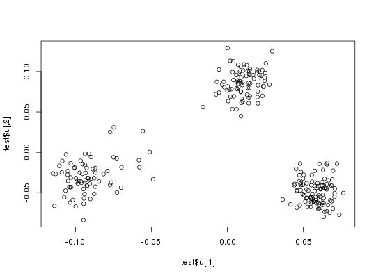
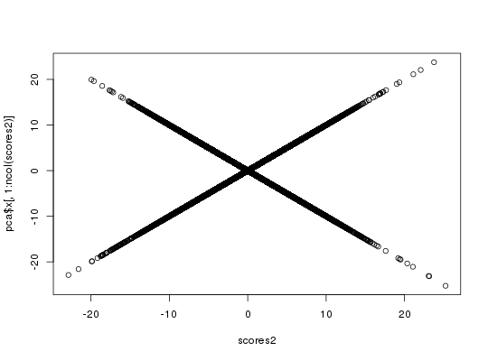

Get the scores of PCA associated with an svd decomposition (class big_SVD).
# S3 method for big_SVD predict(object, X. = NULL, ind.row = rows_along(X.), ind.col = cols_along(X.), block.size = 1000, ...)
big_SVD or big_randomSVD.1000.A matrix of size \(n \times K\) where n is the number of samples
corresponding to indices in ind.row and K the number of PCs
computed in object. If X is not specified, this just returns
the scores of the training set of object.
X.desc <- big_attachExtdata() n <- nrow(X.desc) # Using only half of the data ind <- sort(sample(n, n/2)) test <- big_SVD(X. = X.desc, fun.scaling = big_scale(), ind.row = ind)#> (2)str(test)#> List of 5 #> $ d : num [1:257] 172 117.7 91.3 87.8 87.4 ... #> $ u : num [1:258, 1:257] -0.095 -0.1202 -0.1086 -0.102 -0.0987 ... #> $ v : num [1:4542, 1:257] -0.003082 0.000146 0.033169 -0.014751 0.011325 ... #> $ means: num [1:4542] 1.31 1.58 1.57 1.6 1.09 ... #> $ sds : num [1:4542] 0.674 0.568 0.602 0.585 0.741 ... #> - attr(*, "class")= chr "big_SVD"plot(test$u)pca <- prcomp(attach.BM(X.desc)[ind, ], center = TRUE, scale. = TRUE) # same scaling all.equal(test$means, pca$center)#> [1] TRUEall.equal(test$sds, pca$scale)#> [1] TRUE# scores and loadings are the same or opposite # except for last eigenvalue which is equal to 0 # due to centering of columns scores <- test$u %*% diag(test$d) class(test)#> [1] "big_SVD"scores2 <- predict(test) # use this function to predict scores all.equal(scores, scores2)#> [1] TRUEdim(scores)#> [1] 258 257dim(pca$x)#> [1] 258 258tail(pca$sdev)#> [1] 3.010563e+00 2.994424e+00 2.985801e+00 2.900507e+00 2.890463e+00 #> [6] 7.303307e-15plot(scores2, pca$x[, 1:ncol(scores2)])plot(test$v[1:100, ], pca$rotation[1:100, 1:ncol(scores2)])# projecting on new data X2 <- sweep(sweep(attach.BM(X.desc)[-ind, ], 2, test$means, '-'), 2, test$sds, '/') scores.test <- X2 %*% test$v ind2 <- setdiff(rows_along(X.desc), ind) scores.test2 <- predict(test, X.desc, ind.row = ind2) # use this all.equal(scores.test, scores.test2)#> [1] TRUEscores.test3 <- predict(pca, attach.BM(X.desc)[-ind, ]) plot(scores.test2, scores.test3[, 1:ncol(scores.test2)])